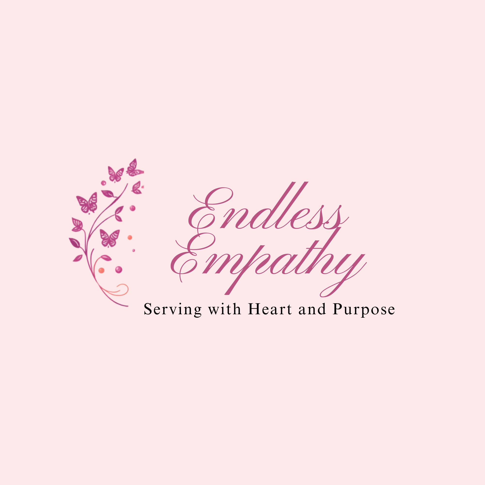

Welcome to Endless Empathy
This website is dedicated to helping individuals get in contact with Endless Empathy
We are aiming to be a safe and comforting place on the internet for you.
How We Support You
Use the links below to learn how you can get support or help our cause:
We try our best to include every form of help. A very important thing to remember is that mental health also needs to be taken care of. We provide support in obtaining a matric Dance Dress, getting mini food hamper/care packages, creating a space for peer Listening, and rest circles.
Need a Reminder?
You cannot pour from an empty cup. Click the button below for a small reminder.
